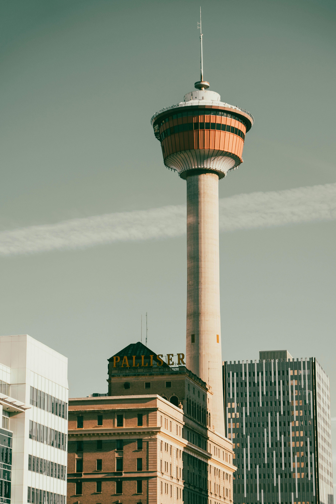

Calgary, Alberta
Calgary is renowned for its world-class events, including the Calgary Stampede, an iconic rodeo and western festival attracting millions of visitors annually, and GlobalFest, a multicultural extravaganza featuring international fireworks competitions and cultural showcases. Outdoor enthusiasts can explore the city's extensive network of parks and trails, with events such as the Lilac Festival and ziplining at Canada Olympic Park offering unique experiences in Calgary's urban and natural landscapes. Whether you're a local or a visitor, Calgary's dynamic events calendar promises excitement, entertainment, and unforgettable memories throughout the year.
